4．矩阵
可以说矩阵这个课题在诞生之前就发展得很好了。我们知道，行列式的研究开始于18世纪中叶以前。行列式包括一个数字方阵，通常总是涉及这个方阵的值，就是由行列式的定义所给出的值。然而从行列式的大量工作中明显地表现出来的是，对于很多目的，方阵本身都可以研究和使用，不管行列式的值是否与该问题有关。于是，仍然需要认识方程本身应该有与行列式无关的本性。方阵本身称为矩阵。矩阵这个词是西尔维斯特(28)首先使用的，这是发生在他实际上希望引用数字的矩形阵列而又不能再用行列式这个词的时候，虽然那时他仅仅涉及由矩形阵列的元素所能形成的那些行列式。后来，如我们在上一节中看到的，在根本没有说到矩阵时增广矩阵就自由地使用了。矩阵的基本性质，如我们将要看到的，也是在行列式的发展中建立起来的。
确实如像凯莱所坚持的（在下面引证的1855年的文章中）那样，在逻辑上，矩阵的概念先于行列式的概念，而在历史上次序正相反。这就是为什么在矩阵引进的时候它的基本性质就已经清楚了的原因。因此，当数学家们预言矩阵概念的可能的用途时，有一个普遍的印象是错误的，即矩阵是由纯数学家发明的有高度创见的独立创造。由于矩阵的应用已很好地建立，这使凯莱想起要把它们作为不同的实体引进。他说：“我决然不是通过四元数而获得矩阵概念的；它或是直接从行列式的概念而来，或是作为一个表达方程组
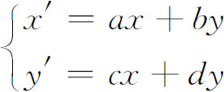
的方便的方法而来的。”就这样他引进了矩阵
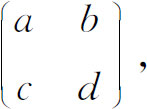
它代表了这个变换的主要信息。因为凯莱是首先指出矩阵本身的，而且关于这个题目首先发表了一系列文章，所以他一般地被归功为矩阵论的创立者。
凯莱1821年生于一个古老而有才能的英国家庭，在学校中他就显示了数学才能。他的老师说服他的父亲送他到剑桥，而不要让他做家务。在剑桥他是数学荣誉会考的一等第一名，并获得史密斯奖。他当选为剑桥的三一学院的研究员和助理导师，但3年后由于必须担任圣职而离开。他转向法律并在这个职业上花费了后来的15年。这期间他用了可观的时间研究数学，并发表了近200篇文章。也是在这时，他和西尔维斯特开始了长期的友谊和合作。
1863年，他被任命为剑桥新创立的萨德勒（Sadler）数学教授。除去1882年受西尔维斯特的聘请在霍普金斯大学以外，他一直在剑桥，直到1895年逝世为止。他在各个课题上都是多产的作者和创造者，特别是在n维解析几何、行列式理论、线性变换、斜曲面和矩阵论方面。同西尔维斯特一起，他是不变量理论的奠基人。由于这大量的贡献，他获得很多荣誉。
和西尔维斯特不一样，凯莱是一个性情温和、冷静判断和沉着的人，他慷慨地帮助和鼓励别人。在法律方面的良好工作和数学上的巨大成就以外，他还找时间培养兴趣于文学、旅行、绘画和建筑学。
同研究线性变换下的不变量（第39章第2节）相结合，凯莱首先引进矩阵以简化记号(29)。这里他给出一些基本概念。接着是他关于这个课题的头一篇重要文章《矩阵论的研究报告》（A Memoir on the Theory of Matrices）(30)。
为简单起见，我们就2×2矩阵或3×3矩阵来叙述凯莱的一些定义，虽然这些定义是用于n×n矩阵并在某些情况下用于长方形矩阵的。两个矩阵相等，如果他们的对应元素相等。凯莱定义零矩阵和单位矩阵为
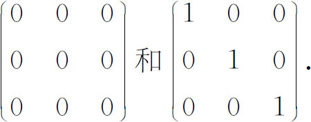
定义两个矩阵的和为这样的矩阵，它的元素是两个相加矩阵的对应元素之和。他注意到这个定义可用于任何两个m×n矩阵，且加法是可结合和可调换的（交换的）。若m是一个数而A是一个矩阵，则mA被定义为这样的矩阵，它的每一个元素都是A的对应元素的m倍。
凯莱直接从两个相继变换的效应的表示作出两个矩阵乘法的定义。例如，设变换
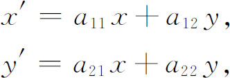
后跟着变换
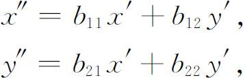
则x″，y″和x，y之间的关系由下式给出：
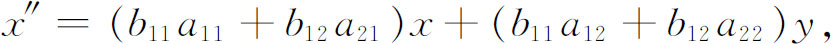
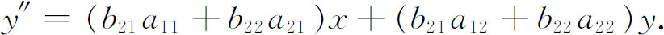
因此凯莱定义两个矩阵的积为
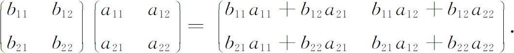
即元素cij是左边因子的第i行元素和右边因子的第j列对应元素乘积之和。乘法是可结合的，但一般不可交换。凯莱指出，m×n矩阵只能用n×p矩阵去乘。
在同一篇文章中，他叙述了
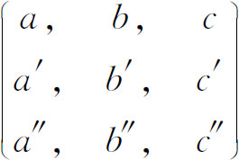
的逆为
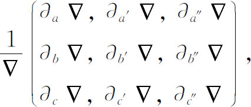
这里
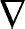
是矩阵的行列式，而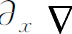
是x在这行列式中的余子式，即x的子式带上适当的符号。一个矩阵和它的逆的乘积是单位矩阵，用I表示。当
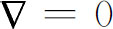
时，矩阵是不定的（用现代术语来说，是奇异的），因而没有逆。凯莱断言，两个矩阵的乘积可以是零，而无须其中有一个为零，只须其中之一是不定的。实际上，凯莱是错的；两个矩阵都必须是不定的才行。因为假如AB＝0，A≠0，B≠0，且仅A是不定的，那么B的逆，即B-1存在，因而ABB-1＝0·B-1＝0。但BB-1＝I，因此AI＝0或A＝0。折转矩阵（转置或共轭）定义为这样的矩阵，矩阵中行和列对换。给出陈述说（但没有证明）
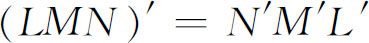
，这里撇（′）表示转置。如果M′＝M，则M称为是对称的；如果M′＝-M，则M是斜对称的（或交错的）。任何一个矩阵可表示成一个对称矩阵和一个斜对称矩阵的和。从行列式理论中带来的另一个概念是方阵的特征方程。对于矩阵M，它定义为
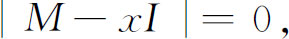
这里｜M-xI｜是矩阵M-xI的行列式，而I是单位矩阵。例如设
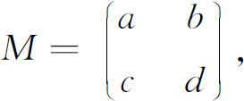
则特征方程（凯莱不用这术语，虽然它是由柯西引进用于行列式的［第3节］）是
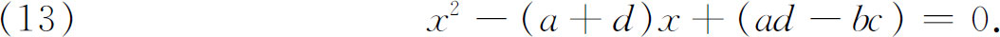
这方程的根是矩阵的特征根（特征值）。
在1858年的文章中，凯莱宣告了一个结果，现在称为任意阶方阵的凯莱-哈密顿定理。这定理说，在（13）中用M代替x，则得到的矩阵是零矩阵。凯莱说他曾对3× 3情况验证了这定理，又说进一步的证明是不必要的。哈密顿与这定理的关系是根据下述事实，即在他的《四元数讲义》(31)中在引进向量r的线性向量函数r′的概念时，涉及到从x，y和z到x′，y′和z′的一个线性变换。他证明这个变换的矩阵满足它的特征方程，虽然他不想正式用矩阵语言来表述。
别的数学家发现了一些矩阵类的特征根的特殊性质。埃尔米特(32)证明了如矩阵M＝M＊，则特征根是实数，这里M*是将M的每个元素用它的共轭复数代替后，再转置得到的矩阵（这样的矩阵M现在称为埃尔米特矩阵）。1861年克莱布什［（Rudolf Friedrich）Alfred Clebsch］(33)从埃尔米特定理推导出，实斜对称矩阵的非零特征根是纯虚数。后来布赫海姆（Arthur Buchheim(34)，1859—1888）证明了若M是对称的，且元素是实数，则特征根是实数，虽然柯西(35)已对行列式建立了这个结果。泰伯（Henry Taber，1860—？）在另一篇文章(36)中作为显然的事实断言：设
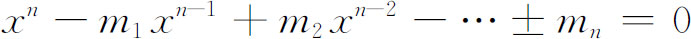
是任一方阵M的特征方程，则M的行列式是mn，如果把矩阵的主子式理解为这样的子式的行列式，这些子式的对角线是矩阵M的主对角线的一部分，则mi是i阶主子式的和。于是特别地，m1是主对角元的和，它也是特征根的和。这个和称为矩阵的迹。泰伯的断言是由梅茨勒（William Henry Metzler，1863—？）(37)给出证明的。
弗罗贝尼乌斯(38)对于特征方程提出了一个问题，他要找最小多项式，即矩阵所满足的次数最低的多项式。他说，它是由特征多项式的因式所形成的，而且是唯一的。直到1904年(39)，亨泽尔（Kurt Hensel，1861—1941）才证明了弗罗贝尼乌斯的唯一性的结论。在同一篇文章中，亨泽尔还证明了如f（x）是矩阵M的最小多项式，而g（x）是矩阵满足的任一其他的多项式，则f（x）整除g（x）。
矩阵的秩的概念是由弗罗贝尼乌斯(40)在1879年引进的，虽然是联系到行列式而说的。一个m行n列矩阵（阶为m×n）有所有k阶［从1阶（A的元素本身）到包括两个整数m和n中的较小者在内的所有的阶］子式。一个矩阵的秩为r当且仅当它至少有一个r阶子式其行列式不为零，而所有高于r阶的子式的行列式都为零。
两个矩阵A和B可用各种方式相联系。如果存在两个非奇异矩阵U及V使A＝UBV，则称它们等价。西尔维斯特(41)曾在他的关于行列式的著作中证明：B的i行子式的行列式的最大公因子di′等于A的i行子式的行列式的最大公因子di。后来史密斯(42)在研究整数元素的矩阵时，证明了每个秩为ρ的矩阵A等价于对角矩阵，其元素沿主对角线向下排列是
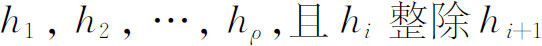
。商h1＝d1，h2＝d2/d1，…称为A的不变因子。进一步设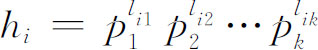
（这里pi是素数），这些不同的方幂
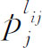
是A的初等因子。不变因子确定初等因子，反之亦然。不变因子和初等因子的概念，是从西尔维斯特和魏尔斯特拉斯的行列式的工作中产生的（如早先指出的），它们是被弗罗贝尼乌斯在1878年的文章中带到矩阵中来的。不变因子和初等因子的意义在于：矩阵A等价于矩阵B当且仅当A和B有相同的初等因子或不变因子。
弗罗贝尼乌斯在1878年的文章中对不变因子做了进一步的工作，然后以合乎逻辑的形式整理了不变因子和初等因子的理论(43)。1878年文章中的工作使弗罗贝尼乌斯能给出凯莱-哈密顿定理的第一个一般性的证明，且对矩阵的本征根（特征根）有一些是相等的情况修改了这个定理。在这篇文章中，他还证明了当
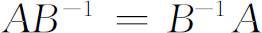
时，这时有确定的商A/B，则（A/B）-1＝B/A，还证明了（A-1）T＝（AT）-1，这里AT是A的转置。正交矩阵这个课题曾受到很大的注意。虽然这术语在1854年(44)就由埃尔米特使用了，但直到1878年才由弗罗贝尼乌斯发表正式的定义（看前面的参考书目）。矩阵M是正交的，如果它等于它的转置的逆，即如果M＝（MT）-1。除定义外，弗罗贝尼乌斯证明了如S表示一个对称矩阵，T表示一个斜对称矩阵，则正交矩阵总能写成形式（S-T）/（S＋T），或更简单地写为（I-T）/（I＋T）。
像矩阵论的许多其他概念一样，相似矩阵的概念起源于行列式的早期研究工作，早至柯西的工作。两个方阵是相似的，如果存在一个非奇异矩阵P使B＝P-1AP。两个相似矩阵的特征方程是相同的，因而有相同的不变因子和初等因子。对复元素的矩阵，魏尔斯特拉斯在他1868年的文章中证明了这个结果（虽然是对行列式作的）。由于一个矩阵代表一线性齐次变换，所以相似矩阵可看成代表同一个变换，只是参考于两个不同的坐标系。
用相似矩阵和特征方程的概念，若尔当(45)证明了矩阵可变到标准型。设矩阵J的特征方程是
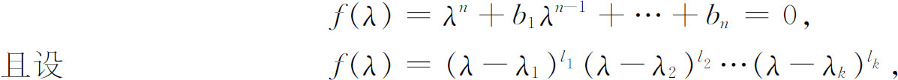
这里λi是互不相同的，则令
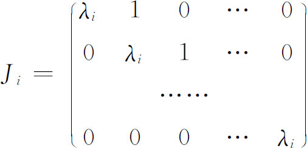
表示一个li阶矩阵。若尔当证明了J可以变换到一个相似矩阵，它具有形式
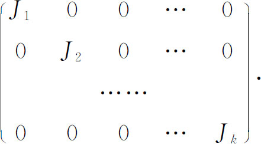
这就是矩阵的若尔当标准型或法式。
弗罗贝尼乌斯在他1878年的文章中用逆步变换的名称处理了A到B的相似变换。在同一论述中他处理了合同矩阵或同步矩阵的概念。这告诉我们，如果
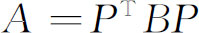
，则A与B合同，写成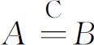
。例如将矩阵A的同样的行和列同时进行对换，所得到的矩阵A的变换就是合同变换。还有，秩为r的对称矩阵A可以用合同变换化简成同秩的对角矩阵；即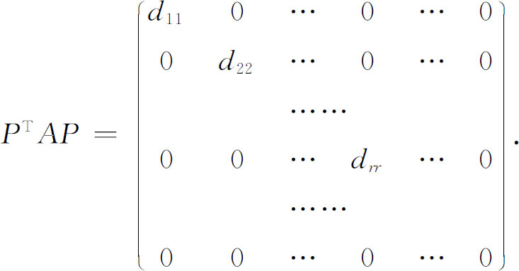
关于合同变换，有很多基本的定理。例如，设S是对称的，而S1合同于S，则S1是对称的；设S是斜对称的，则S1也是斜对称的。
梅茨勒于1892年发表在《美国数学杂志》上的文章中引进了矩阵的超越函数，把每个这样的函数写成矩阵的幂级数。他对
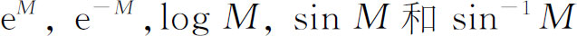
建立了级数。例如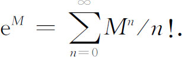
矩阵论的分支是很多的。矩阵已用来表示二次型和双线性型。这样的型化简成简单的标准型是关于矩阵不变量工作的核心。它们还与超复数紧密联系，而凯莱在他1858年的文章中建立了把超复数当作矩阵来看待的思想。
行列式和矩阵两者都已经被推广到了无限阶。无限阶行列式已出现在傅里叶的工作中，用以确定一个函数的傅里叶级数展开的系数（第28章第2节），也已出现在希尔关于常微分方程的解的工作中（第29章第7节）。关于无限阶行列式的零星的文章写于这两篇杰出的19世纪的研究工作之间，但重要的活动推迟到希尔的时候。
无限阶矩阵隐含地及明显地包含在傅里叶、希尔和庞加莱的著作中，庞加莱完成了希尔的工作。可是研究无限矩阵的巨大动力是来自积分方程的理论（第45章）。我们不能给无限阶行列式和矩阵提供篇幅了(46)。
在矩阵的初等的工作中，元素是通常的实数，虽然为了数论的好处，限制于整数元素做了大量的工作。然而，它们可以是复数并且的确可以是许多别的量。自然，矩阵本身所具有的性质依赖于元素的性质。19世纪末和20世纪初的研究已经专门针对元素属于抽象域的矩阵的性质。近代物理的数学机械中的矩阵论的重要性在这儿不能再谈了，但关于这一方面联系到泰特所作的预言是有趣的，他说：“凯莱正为未来的一代物理学家锻造武器。”
参考书目
Bernkopf，Michael：“A History of Infinite Matrices，”Archive for History of Exact Sciences，4，1968，308-358．
Cayley，Arthur：The Collected Mathematical Papers，13 vols．，Cambridge University Press （1889-1897），Johnson Reprint Corp．，1963．
Feldman，Richard W．，Jr．：（Six articles on matrices with various titles），The Mathematics Teacher，55，1962，482-484，589-590，657-659；56，1963，37-38，101-102，163-164．
Frobenius，F．G．：Gesammelte Abhandlungen，3 vols．，Springer-Verlag，1968．
Jacobi，C．G．J．：Gesammelte Werke，Georg Reimer，1884，Vol．3．
MacDuffee，C．C．：The Theory of Matrices，Chelsea，1946．
Muir，Thomas：The Theory of Determinants in the Historical Order of Development（1906-1923），4 vols．，Dover （reprint），1960．
Muir，Thomas：List of writings on the theory of matrices，Amer．Jour．of Math．，20，1898，225-228．
Sylvester，James Joseph：The Collected Mathematical Papers，4 vols．，Cambridge University Press，1904-1912．
Weierstrass，Karl：Mathematische Werke，Mayer und Müller，1895，Vol．2．
————————————————————
(1) Jour．de l'Ecole Poly．，10，1815，29-112＝Œuvres，（2），1，91-169．
(2) Nouv．Mém．de l'Acad．de Berlin，1773，85-128＝Œuvres，3，577-616．
(3) Jour．de l'Ecole Poly．，9，1813，280-302．
(4) Phil．Mag．，16，1840，132-135和21，1842，534-539＝Coll．Math．Papers，1，54-57和86-90．
(5) Exercices d'analyse et de physique mathématique，1，1840，385-422＝Œuvres，（2），11，466-509．
(6) Jour．für Math．，22，1841，285-318＝Werke，3，355-392．
(7) Mémoires，couronnés par l'Academie Royale des Sciences et Belles-Lettres de Bruxelles，14，1841 ．
(8) Jour．für Math．，22，1841，319-359＝Werke，3，393-438．
(9) Œuvres，（2），5，244-285．
(10) Phil．Mag．，（4），4，1852，138-142＝Coll．Math．Papers，1，378-381．
(11) r是型的秩，即系数矩阵的秩，秩的概念见第4节。
(12) Jour．für Math．，53，1857，265-270＝Werke，3，583-590；也看593-598．
(13) 型（9）可以通过一个线性变换
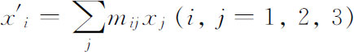
化简成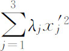
，这里λj是（11）的特征根。用矩阵语言说，变换的矩阵M是正交的；即M的转置等于M的逆。(14) 他的Introductio（1748）的附录的第五章＝Opera，（1），9，379-392。
(15) Misc．Taur．，3，1762-1765＝Œuvres，1，520-534，与Mém．de l'Acad．des Sci．，Paris，1774＝Œuvres，6，655-666．
(16) Mém．de l'Acad．des Sci．，Paris，1772，pub．1775＝Œuvres，8，325-366．
(17) Hachette and Monge：Jour．de l'Ecole Poly．，4，1801-1802，143-169；Poisson and Hachette，ibid．，170-172．
(18) Œuvres，（2），5，244-285．
(19) 4，1829，140-160＝Œuvres，（2），9，174-195．
(20) Jour．für Math．，12，1834，1-69＝Werke，3，191-268．
(21) Exercices d'analyse et de physique mathématique，1，1840，53＝Œuvres，（2），11，76．
(22) Œuvres，（2），5，244-285．
(23) Monatsber．Berliner Akad．，1858，207-220＝Werke，1，233-246．
(24) Phil．Mag．，（4），1，1851，119-140＝Coll．Math．Papers，1，219-240．
(25) Monatsber．Berliner Akad．，1868，310-338＝Werke，2，19-44．
(26) Phil．Trans．，151，1861，293-326＝Coll．Math．Papers，1，367-409．
(27) Bull．des Sci．Math．，（2），17，1893，240-246＝Œuvres，1，239-245．
(28) Phil．Mag．，（3），37，1850，363-370＝Coll．Math．Papers，1，145-151 ．
(29) Jour．für Math．，50，1855，282-285＝Coll．Math．Papers，2，185-188．
(30) Phil．Trans．，148，1858，17-37＝Coll．Math．Papers，2，475-496．
(31) 1853，p．566．
(32) Comp．Rend．，41，1855，181-183＝Œuvres，1，479-481 ．
(33) Jour．für Math．，62，1863，232-245．
(34) Messenger of Math．，（2），14，1885，143-144．
(35) Œuvres，（2），9，174-191 ．
(36) Amer．Jour．of Math．，12，1890，337-396．
(37) Amer．Jour．of Math．，14，1891/1892，326-377．
(38) Jour．für Math．，84，1878，1-63＝Ges．Abh．，1，343-405．
(39) Jour．für Math．，127，1904，116-166．
(40) Jour．für Math．，86，1879，146-208＝Ges．Abh．，1，482-544．
(41) Phil．Mag．，（4），1，1851，119-140＝Coll．Math．Papers，1，219-240．
(42) Phil．Trans．，151，1861-1862，293-326＝Coll．Math．Papers，1，367-409．
(43) Sitzungsber．Akad．Wiss．zu Berlin，1894，31-44＝Ges．Abh．，1，577-590．
(44) Cambridge and Dublin Math．Jour．，9，1854，63-67＝Œuvres，1，290-295．
(45) Traité des substitutions，1870，Book Ⅱ，88-249．
(46) 见本章末尾书目中伯恩科普夫（M．Bernkopf）的文献。